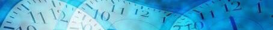

<ons-page>
    
    <div style="text-align: center">
        
        <ons-button ng-click="myNavigator.pushPage('research.html')" modifier="quiet" class="absolute">
            
        </ons-button>
    </div>
    
</ons-page>